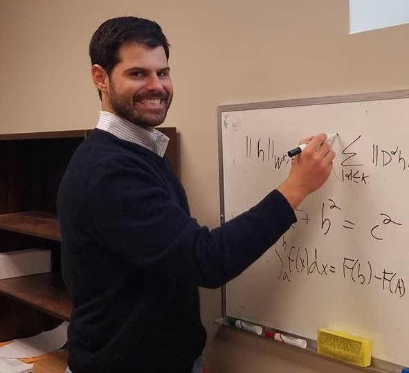

Welcome to Deep Learning on Graphs for Natural Language Processing (DLG4NLP@ICLR’22)!

Ivan Titov is an associate professor in the Institute for Language, Cognition and Computation (ILCC) at the School of Informatics of the University of Edinburgh. He is an action editor for the journal of machine learning research (JMLR), Transactions of ACL (TACL), a member of editorial board of JAIR, an advisory board member for European Chapter of ACL. His other professional services include being a PC co-chair for *SEM 2016 and CoNLL 2018, a senior area chair for ACL 2019 and a program co-chair for ICLR 2021.
Title: TBA.
Abstract: TBA.
Xipeng Qiu is a professor at the School of Computer Science, Fudan University. He received his B.S. and Ph.D. degrees from Fudan University. His research interests include natural language processing and deep learning. He has published more than 60 top journal/conference papers (e.g., TACL, TKDE, T-ALS, ACL, EMNLP, IJCAI, AAAI, ICCV). He also leads the development of FudanNLP and fastNLP.
Title: TBA.
Abstract: TBA.

Michael Perlmutter is a Hedrick Assistant Adjunct Professor in the Department of Mathematics at UCLA working under the supervision of Deanna Needell. His current research is focused on the mathematics of data science including applied harmonic analysis and probability.
Title: Geometric Scattering: Graph Neural Nets that Preserve High-Frequency Information
Abstract: Many advances in deep learning exploit the intrinsic structure of the data. For instance, Convolutional Neural Networks leverage the fact that images are a regular grid of pixels, whereas recurrent neural networks exploit the temporal structure of text-based data. Inspired by this success, the new field of geometric deep learning aims to develop deep learning architectures for datasets such as graphs and manifolds with less regular structure.
A principal challenge in this endeavor is defining a proper notion of convolutional filters. Many graph neural networks propose to define graph convolution as a localized averaging operation. While these networks achieve great success on benchmark datasets, they are known to suffer from the oversmoothing problem, i.e., they do not preserve high-frequency information. This motivates us to define an alternative, wavelet-based model of graph neural networks known as the graph scattering transform. In its initial form, the graph scattering transform is a handcrafted network with no learnable parameters (except in the final layer). This version of the graph scattering transform has the advantage of (i) being amenable to rigorous mathematical analysis and (ii) not requiring much training data. However, handcraftedness is also a form of rigidity that limits the ability of the network to learn. Therefore, I will also introduce several new variations of the graph scattering transform which are able to learn from data.
A principal challenge in this endeavor is defining a proper notion of convolutional filters. Many graph neural networks propose to define graph convolution as a localized averaging operation. While these networks achieve great success on benchmark datasets, they are known to suffer from the oversmoothing problem, i.e., they do not preserve high-frequency information. This motivates us to define an alternative, wavelet-based model of graph neural networks known as the graph scattering transform. In its initial form, the graph scattering transform is a handcrafted network with no learnable parameters (except in the final layer). This version of the graph scattering transform has the advantage of (i) being amenable to rigorous mathematical analysis and (ii) not requiring much training data. However, handcraftedness is also a form of rigidity that limits the ability of the network to learn. Therefore, I will also introduce several new variations of the graph scattering transform which are able to learn from data.

Diyi Yang is an assistant professor in the School of Interactive Computing at Georgia Tech. She is broadly interested in Computational Social Science, and Natural Language Processing. Diyi received her PhD from the Language Technologies Institute at Carnegie Mellon University. Her work has been published at leading NLP/HCI conferences, and also resulted in multiple award nominations from EMNLP, ICWSM, SIGCHI and CSCW. She is named as a Forbes 30 under 30 in Science, a recipient of IEEE AI 10 to Watch, and has received faculty research awards from Amazon, Facebook, JPMorgan Chase, and Salesforce.
Title: A Closer Look at Structure and Sparsity in Graph Based Natural Language Understanding
Abstract: Graph based approaches have been increasingly utilized for different NLP applications, however, what types of structures should be leveraged and to what extent these graph structures help still remain challenging. In this talk, we take a closer look at graph neural networks via two typical NLP applications: structure-aware conversation summarization and knowledge-graph enhanced question answering. Concretely, the first section looks at how to utilize graph structures to better encode discourse relations and actions in conversations for improved dialogue summarization, and the second part dissects state-of-the-art graph neural network modules and their reasoning capability for question answering.
Get In Touch
| dlg4nlp.workshop@gmail.com |
- © DLG4NLP. All rights reserved
- Design: HTML5 UP